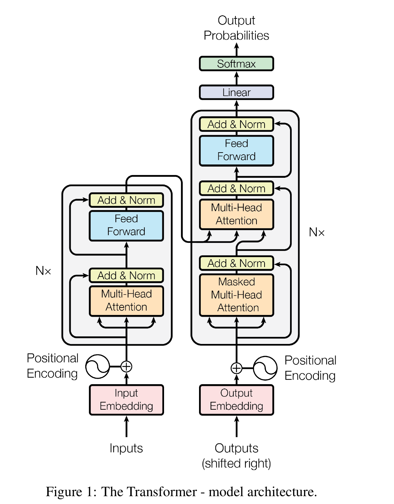

结构要点 论文
- 编码器:N = 6 个相同层堆叠;每层 2 个子层——多头自注意力 + 位置逐点前馈网络
- 每个子层外包裹残差连接 + 层归一化:LayerNorm(x + Sublayer(x))
- 所有子层与嵌入层的输出维度 d_model = 512
- 解码器:同为 N = 6 层,额外插入第 3 个子层——对编码器输出做多头注意力
- 解码器自注意力加掩码,且输出嵌入右移一位:位置 i 的预测只依赖小于 i 的已知输出(自回归)

原论文 Figure 1(第 3 页):Transformer 模型架构